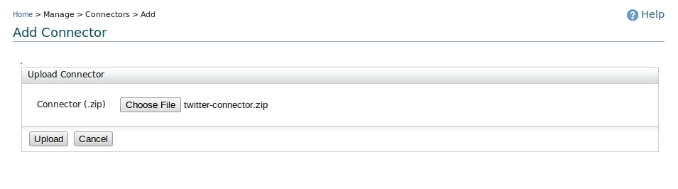
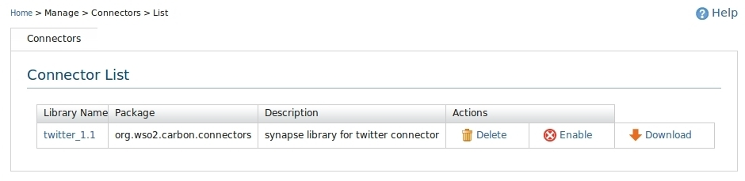

A connector allows you to interact with a third-party product's functionality and data from your message flow. For example, the predefined ESB connectors allow you to connect to and interact with the APIs of services such as Twilio, Salesforce, and JIRA. For example, if you have enabled the Twitter and Google Spreadsheet connectors in your ESB instance, your message flow could receive requests containing a user's Twitter name and password, log into the user's Twitter account, get a list of the user's followers, and write that information to a Google spreadsheet. Each connector provides a set of operations, which you call from your proxy services, sequences, and REST APIs to interact with that product. For example, the Twitter connector provides operations that call the Twitter APIs to get and send direct messages, retrieve IDs of friends and followers, update status, retweet other users' status, and more.
To add a connector to this ESB instance, click Manage > Connectors > Add.
Figure 1:Connector main
You can then upload the connector's ZIP file.

Figure 2: Uploading Connectors
To view the list of deployed connectors, click Manage > Connectors > List.

Figure 3:Connector List
Before you can use a connector, you must enable it by clicking the Enable link for that connector in the list. To make a connector temporarily unavailable in the ESB instance, click Disable.

Figure 4:Connector List
To remove a connector from this ESB instance, click the Delete link for that connector in the list.